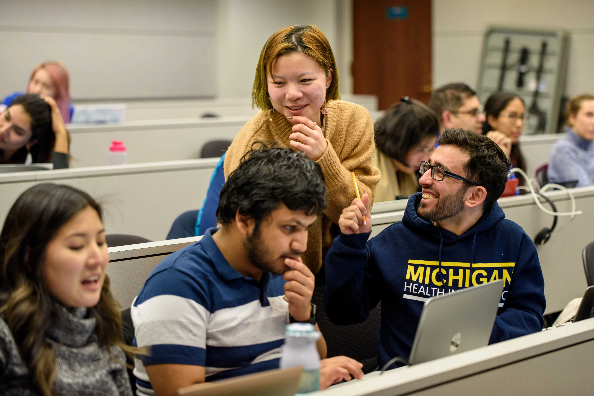
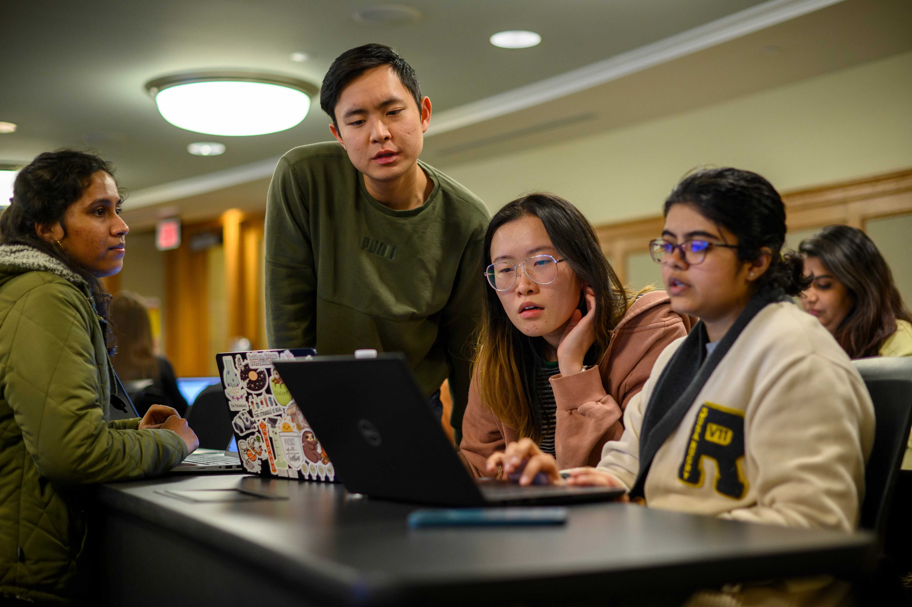

Take advantage of tutoring resources to strengthen your understanding of course material.
Available Tutoring Services
Peer Tutoring @ UMSI

The peer tutoring program at the University of Michigan's School of Information (SI) is an invaluable resource designed to support students in their academic journey. This program connects students with knowledgeable peers who provide guidance and assistance in a variety of subject areas, fostering a collaborative learning environment. Peer tutors offer personalized help, clarifying challenging concepts and helping to develop effective study strategies that cater to individual learning styles. This initiative not only aids those seeking help but also empowers tutors to reinforce their own understanding and develop strong communication and leadership skills. By promoting a culture of mentorship and academic excellence, the peer tutoring program at SI enhances the educational experience, helping students to flourish both academically and personally.
Sweetland Writing Center
The Sweetland Center for Writing at the University of Michigan is a central hub for writing support and instruction, dedicated to fostering excellence in writing across all disciplines. It offers a wide range of services designed to assist undergraduate and graduate students at every stage of the writing process, whether they're brainstorming ideas, organizing drafts, or refining final copies. Through personalized writing consultations, writing workshops, and peer tutoring, Sweetland helps students develop their writing skills in a supportive and collaborative environment. The center also offers specialized programs for multilingual writers and those working on long-term projects like theses and dissertations. Additionally, Sweetland contributes to the university’s larger academic mission by promoting innovative writing pedagogy and supporting faculty in incorporating writing into their courses. Overall, the Sweetland Center for Writing plays a crucial role in nurturing confident, effective communicators who are well-prepared to succeed in their academic and professional endeavors.
Math Lab & Science Learning Center

The Math Lab and Science Learning Center at the University of Michigan are essential resources committed to supporting students in their pursuit of excellence in mathematics and the sciences. The Math Lab offers personalized assistance through drop-in tutoring, allowing students to receive immediate help with homework problems, exam preparation, or concepts that are difficult to grasp. Staffed by knowledgeable tutors, many of whom are advanced students or professionals in mathematics, the lab fosters a welcoming and collaborative environment. Similarly, the Science Learning Center (SLC) provides a range of services to help students excel in their biology, chemistry, and physics courses. The SLC offers study groups, workshops, and one-on-one tutoring, which are designed to deepen understanding and enhance problem-solving skills. These centers not only provide academic support but also encourage students to engage with their peers, building learning communities that enhance their educational experience. Together, they play a vital role in helping students navigate challenging coursework and achieve their academic goals.